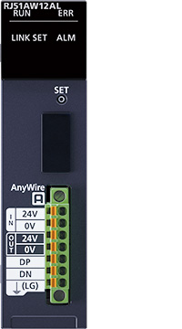
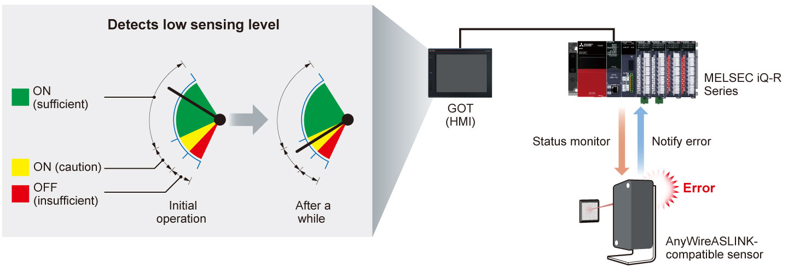
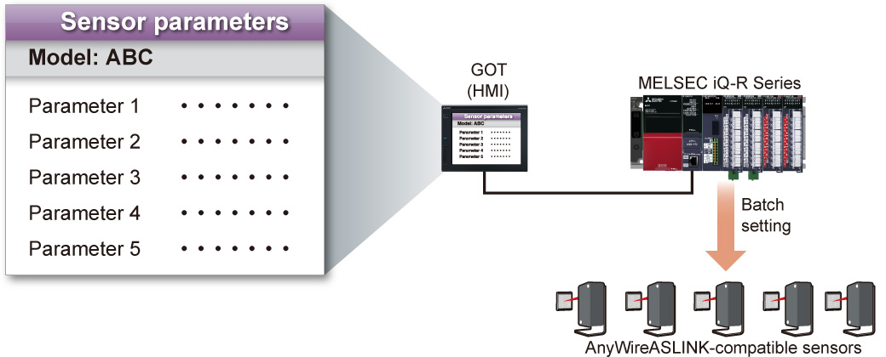

Controllers MELSEC iQ-R Series Product features -Network-

AnyWireASLINK master module
AnyWireASLINK system can monitor (diagnose) the network system from a centralized location, reducing commissioning time and improving productivity.

Features<sup>Predictive maintenance by monitoring of sensor status</sup>
- Diagnostics
- Predictive maintenance
- The sensing level of sensors can be monitored from the programmable controller and GOT (HMI)
- Detects errors such as low sensing level and notifies the entire system before an error occurs, enabling predictive maintenance

Easy setup of sensors
- Setup time reduction
- Sensor parameters can be set from the programmable controller and GOT (HMI)
- General sensors need to be adjusted one by one on the shop floor. AnyWireASLINK system allows multiple sensors to be set in batch from the programmable controller, significantly reducing sensor setup time

Specifications<sup>AnyWireASLINK master module specifications</sup>
| Item | RJ51AW12AL |
|---|---|
| Number of bit data points (bit) | Max. 512 (input: 256/output: 256) |
| Number of connectable units | Max. 128 (varies according to each remote unit's current consumption) |
| Maximum total wiring length (m) | 200*1 |
| Topology | Bus (multi-drop, T-branch, tree branch, and star wiring) |
| Transmission clock (Hz) | 27.0k |
| Max. transmission cable supply current*2 (A) | 2.0 (when 1.25 mm2 cable is used) 1.2 (when 0.75 mm2 cable is used) |
- *1.For remote modules with transmission cables (DP, DN), the length of the transmission cables (DP, DN) is included in the total wiring length.
- *2.The maximum value may vary depending on the overall cable length. For details, please refer to the “MELSEC iQ-R AnyWireASLINK Master Module User's Manual (Startup) (SH-081584ENG)”.